The Creation of Leisure Time
Pre-1815: Traditional Work Patterns
- Seasonal rhythms governed agricultural work
- Task-based labor in artisan shops
- Work and life intermingled
- No clear division between "work time" and "free time"
Post-1815: Industrial Time
- Factory bells regulate the working day
- Wage labor creates fixed schedules
- Separation of work time from free time
- The working day creates its opposite: Leisure Time
Structured Time Off:
- Sundays (Sabbath observance)
- Evenings after work
- Saturday half-holidays (emerging practice)
New Question: What do you do when you're not working?
The Middle Class and Respectable Recreation
The New Middle Class
Clerks, shopkeepers, small manufacturers, professionals
Leisure time and discretionary spending power
Leisure as Status Marker
How you spend your free time signals who you are
Leisure becomes a way to perform and display middle-class identity.

Professional ideal: an antebellum doctor, c. 1840s.
The Feminization of Respectability
Middle-class women became powerful symbols of moral refinement.
- Visibility in public space became part of performing respectability.
- Women's taste shaped the boundary between "refined" and "vulgar."
- Leisure became a language of virtue as much as class.

Respectability performed in public: women at a museum.
Popular "Improving" Amusements
- Museums (natural history, curiosities)
- Moral lectures and lyceums
- Theater (the "right" kind—respectable venues)
Affordability
- Barnum's Museum: ~$0.25 admission
- Theater boxes & pit: $0.50–$1.00
Geography of Respectability
Broadway Theaters
Upscale venues catering to middle-class tastes and values
Astor Place Opera House
Elite uptown venue symbolizing refined culture
Respectable recreation fused class aspiration with moral performance—on public display.
The Working-Class City: Conditions
Immigration Wave
Massive waves of Irish and German immigrants crowd into cities; See Chapter 14
Working Conditions
- Factory workers: 12–14 hour days, dangerous machinery
- Dockhands: Heavy physical labor, irregular employment
- Day laborers: Casual work, no job security
- Low wages, no benefits
- Child labor common
Living Conditions
- Overcrowding: Multiple families per room
- Slums: Poor sanitation, disease
- Tenement buildings with no running water
- High mortality rates

The Working-Class City:
Bowery · Fire Companies · Five Points
The Bowery
- Visible working-class culture
- Bowery Theatre: 12¢ tickets (affordable)
- Gangs & swagger: The "Bowery B'hoy" style
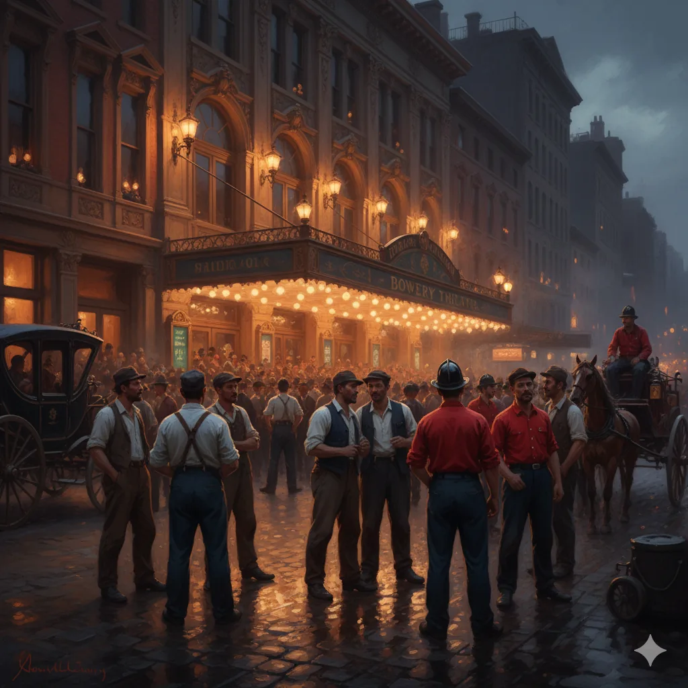
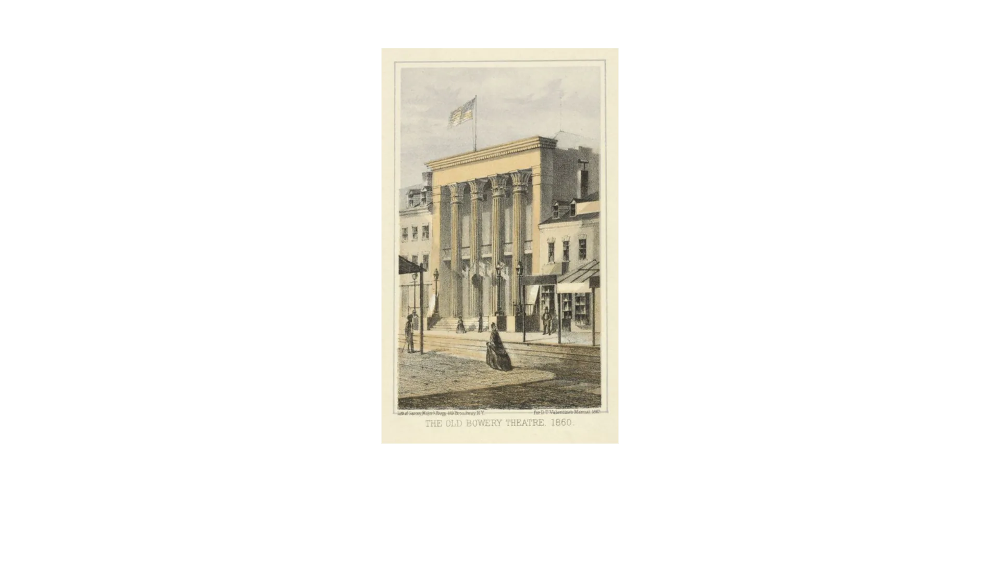
Fire Companies
- Volunteer brigades: civic service + identity
- Ward politics: ties to Democratic machines
- Masculine performance: courage, rivalry
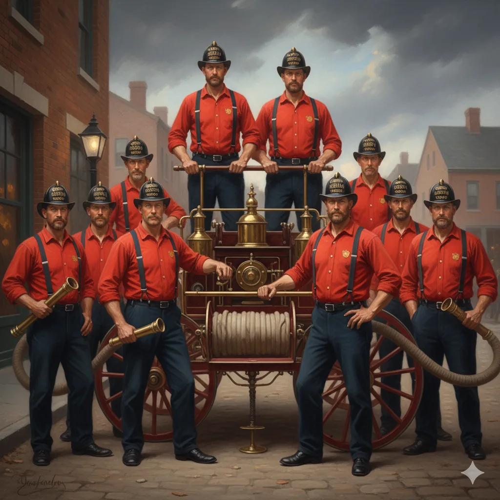
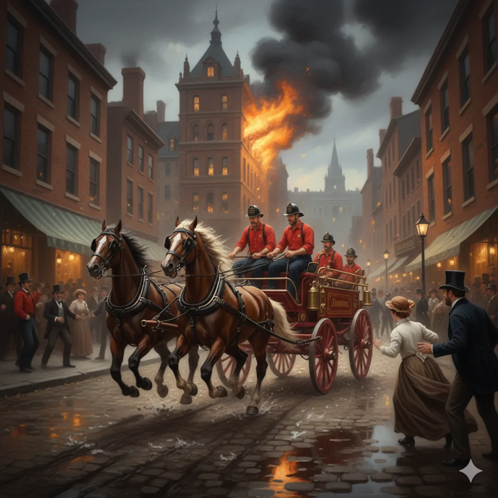
Five Points
- Infamous slum in middle-class imagination
- Underground amusements: cockfights, dance halls
- Community & survival: families, mutual aid
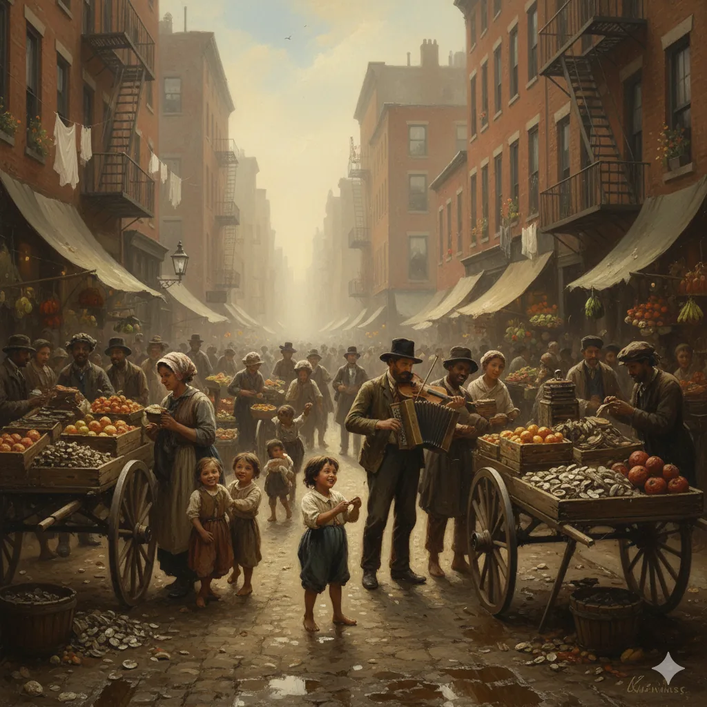
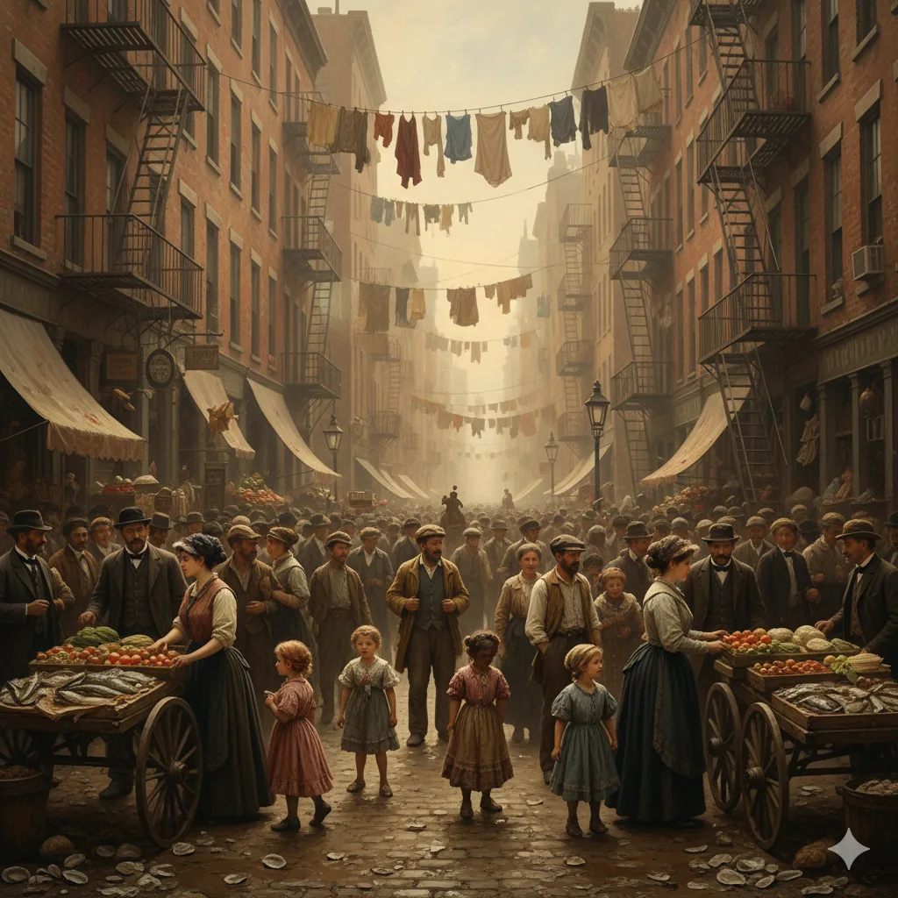
The Hunger for Spectacle
Concentration of people in cities produces unprecedented demand for novelty and sensation
Newspapers and posters saturate public space; the city itself becomes a theater
Citizens perform their identity through choices of amusement—where you go and what you see defines who you are
Americans across classes crave spectacle but disagree on what forms are legitimate
Setting the Stage:
The Urban Public Sphere
The City as Theater
Media Turn Streets into Stages
Colorful advertisements plaster walls and buildings
Daily coverage of theatrical performances, scandals, and sensations
Walking Broadway or the Bowery means encountering performance at every turn
Urban space becomes a place to see and be seen
The city itself is theatrical—everyone is both performer and audience
The Public Sphere Becomes Performative
Traditional Ideal of Public Sphere
Rational debate in coffeehouses, salons, and through newspapers
Citizens participate through reading and reasoned discussion
Enlightenment model: Ideas triumph through logical argument
Structural Transformation: Democracy as Spectacle
From rational debate toward spectacle and display
- Democracy means having the right to watch, judge, and participate in public amusements
- Citizens act by seeing and being seen, not just by reading and debating
- Identity is performed through your choice of amusement and your physical presence
New Rules of Citizenship
Participating by attending, watching, and judging public entertainment
Your identity is performed through where you go and how you behave there
Different entertainment venues = different claims about who represents "the people"
Public culture becomes contested terrain for representing "the people"
Origins and Rise of Blackface Minstrelsy
What Was Blackface Minstrelsy?
- White performers in burnt-cork makeup
- Mocked Black speech, dance, music, and mannerisms
- Became the most popular U.S. entertainment form of the 19th century
How It Began
- Thomas D. Rice performs “Jim Crow” (1820s–30s)
- Claims to imitate Black performers he observed
- Virginia Minstrels (1843) create the first full minstrel troupe
Typical Show Format
- Act I: Semicircle jokes & songs
- Olio: Variety acts, dancers, novelty pieces
- Finale: Comic skit or farce
Stock Characters: “Jim Crow” (rural buffoon), “Zip Coon” (urban dandy), “Mammy”.
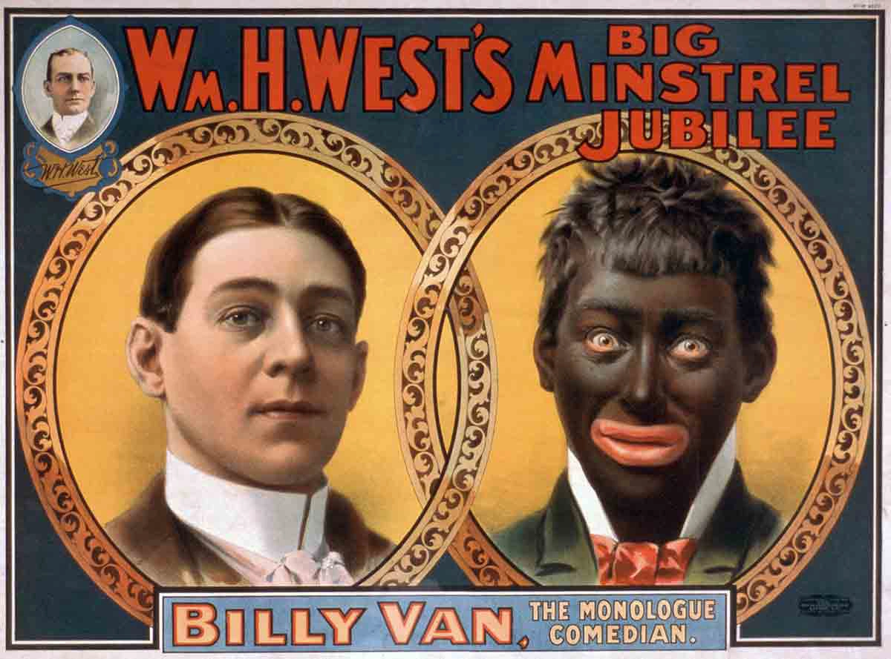
Historical racist imagery shown for educational analysis.
Why Minstrelsy Mattered
Cultural Function
1) United White Audiences Across Class Lines
- Working-class and elite venues
- North and South attended
- Forged a shared “American” culture through racism
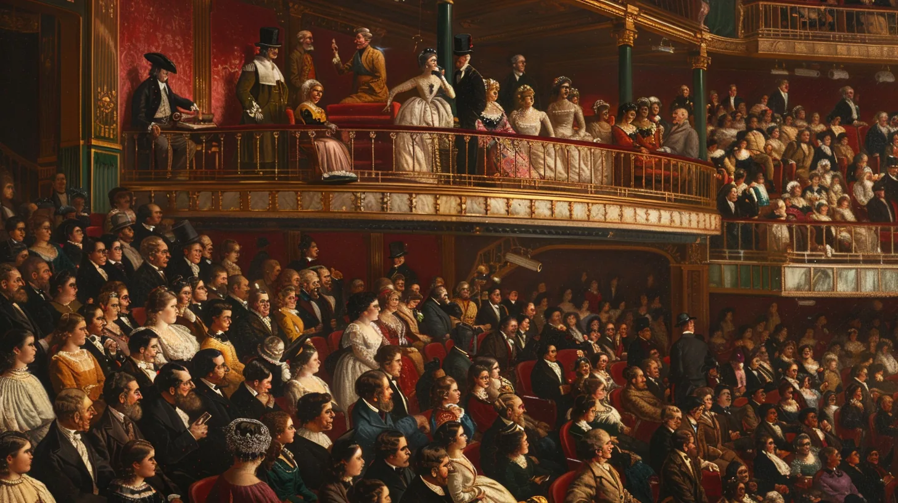
2) Cultural Borrowing with Racist Caricature
- White performers adopted Black music, dance, and humor
- Simultaneously portrayed Black people as inferior, childlike, comic
- Consumed the culture while denying the humanity of its creators
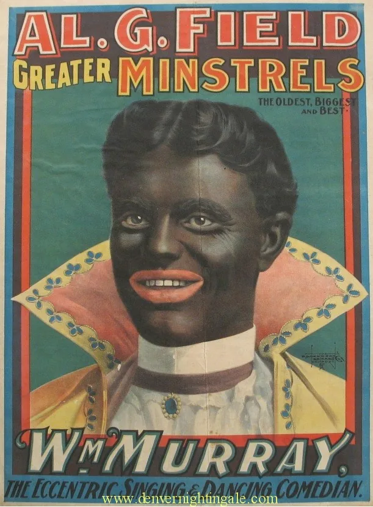
3) Justified Slavery and Racial Hierarchy
- Stage myths of “happy” enslaved people
- Normalized claims of “natural” racial inferiority
- Made racism entertaining—therefore ordinary
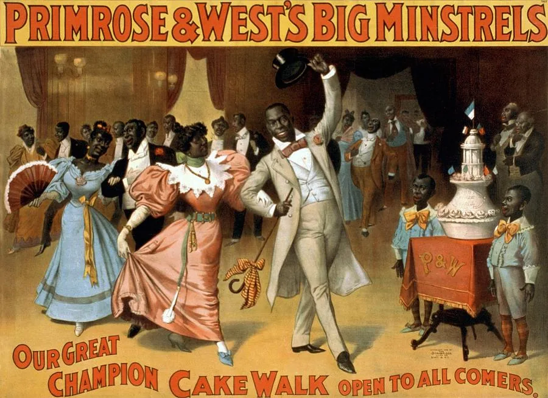
The Central Contradiction of Minstrelsy
Simultaneous Fascination and Dehumanization
- White audiences loved Black music and dance
- But could only enjoy it through racist caricature
- Cultural borrowing combined with dehumanization
What This Reveals About American Culture
- White Americans drawn to Black expressive culture
- But unwilling to treat Black people as equals
- Pattern continues: jazz, blues, rock, hip-hop — borrowed without equal respect
Historical Significance
- First truly national mass entertainment (North + South)
- Template for American variety entertainment (→ vaudeville → Hollywood → TV)
- Shaped American racial imagination for generations
Mass entertainment and racism emerge together in the U.S.
Blackface Minstrelsy
What Is Minstrelsy?
Blackface minstrelsy: White performers in blackface makeup performing racist caricatures of Black Americans
- Emerges in the 1830s–1840s
- Becomes the most popular form of American entertainment by mid-century
- Performed across class lines—in elite theaters and working-class venues
The Minstrel Show Format
- Part 1: Semicircle of songs, jokes, and comic banter (interlocutor & endmen)
- Part 2: "Olio" or variety section with individual acts
- Part 3: One-act farce or skit
- Stock characters: Jim Crow (rural slave), Zip Coon (urban dandy)
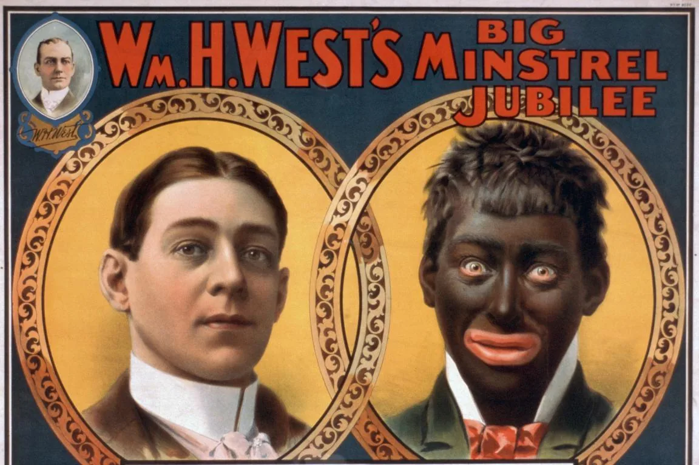
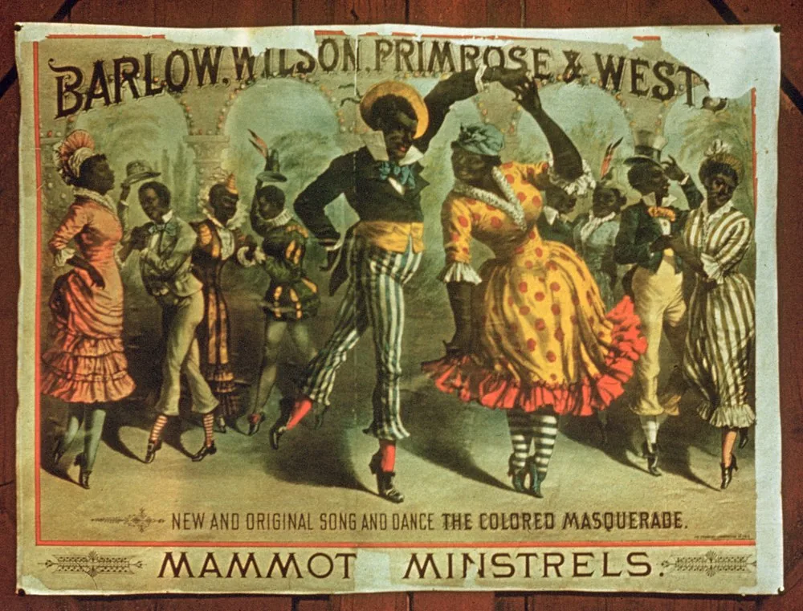
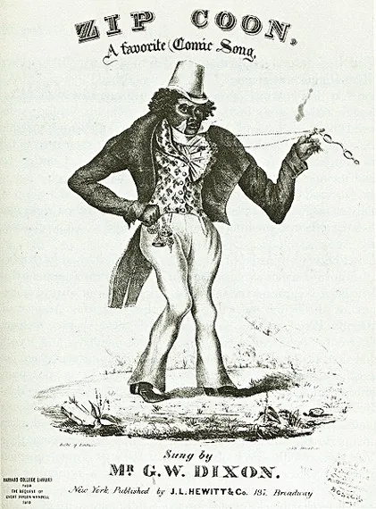
The Ideology of Minstrelsy
Racist Stereotypes
Minstrelsy portrays Black Americans as:
- Childlike, ignorant, lazy
- Happy in slavery
- Incapable of citizenship or self-governance
- Comic, ridiculous, non-threatening
Political Function
Minstrelsy serves to:
- Justify slavery by depicting enslaved people as content
- Oppose abolition by mocking Black claims to freedom and equality
- Define whiteness by contrast—to be white is to be NOT Black
- Unite white working and middle classes around shared racial identity
The Paradox of Fascination
White Americans are simultaneously attracted to and repulsed by Blackness
- Desire: Black music, dance, style, and expressiveness fascinate white audiences
- Anxiety: This attraction threatens white identity and hierarchy
- Solution: Minstrelsy allows whites to "play Black" while maintaining racial boundaries
Blood Sports, Boxing,
and Working-Class Masculinity
Blood Sports as Rough Amusement
Types of Blood Sports
- Cockfighting: Roosters fitted with metal spurs fight to the death
- Dogfights: Pit bulls and terriers battle in underground rings
- Rat-baiting: Dogs kill as many rats as possible in a pit
- Bare-knuckle fights: Human boxing without gloves, few rules
Social Meaning
Working-class masculine sociability and defiance of middle-class restraint
- Held in Five Points and Bowery taverns, cellars, and back rooms
- Heavy gambling on outcomes
- Often illegal yet widely practiced
- Entrepreneurs monetize despite reformers' opposition
Sets the stage for the culture of the prize ring
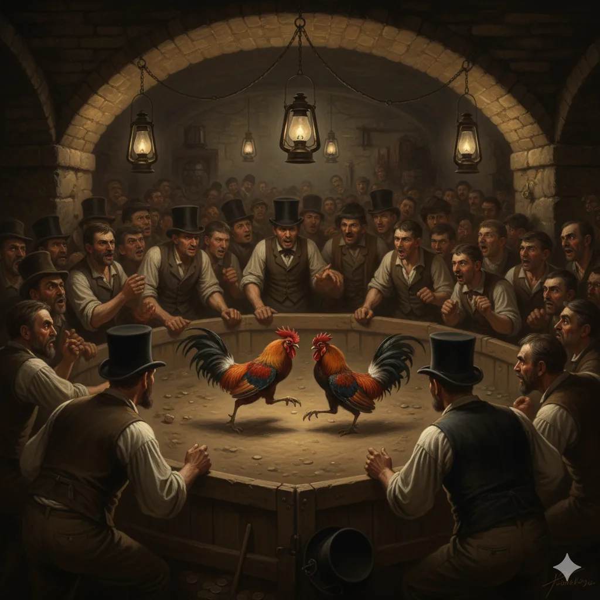
Boxing and the Culture of the Prize Ring
The Sporting Fraternity
Bare-knuckle prizefighting: Illegal, staged in secret venues
"The fancy" or "sporting men"—subculture of fight enthusiasts
Who Were the Sporting Men?
Diffuse subculture around prizefighting spanning urban America
- Working-class men: butchers, mechanics, firemen, tavern keepers
- Across different ethnic backgrounds but united by sporting culture
- Found in every major city from New York to New Orleans
Shared Culture of "The Fancy"
- Sports newspapers: Spirit of the Times and similar publications
- Tavern gatherings: Discussion and planning of matches
- Insider slang: Specialized vocabulary marking membership
- "Flash" style: Distinctive dress and swagger
- Fan identity: Following fights, knowing fighters, attending matches
Prizefighting creates a working-class male counterpublic—an alternative public sphere with its own values and heroes
P. T. Barnum:
The Art of Humbug
Barnum's American Museum (1841–1865)
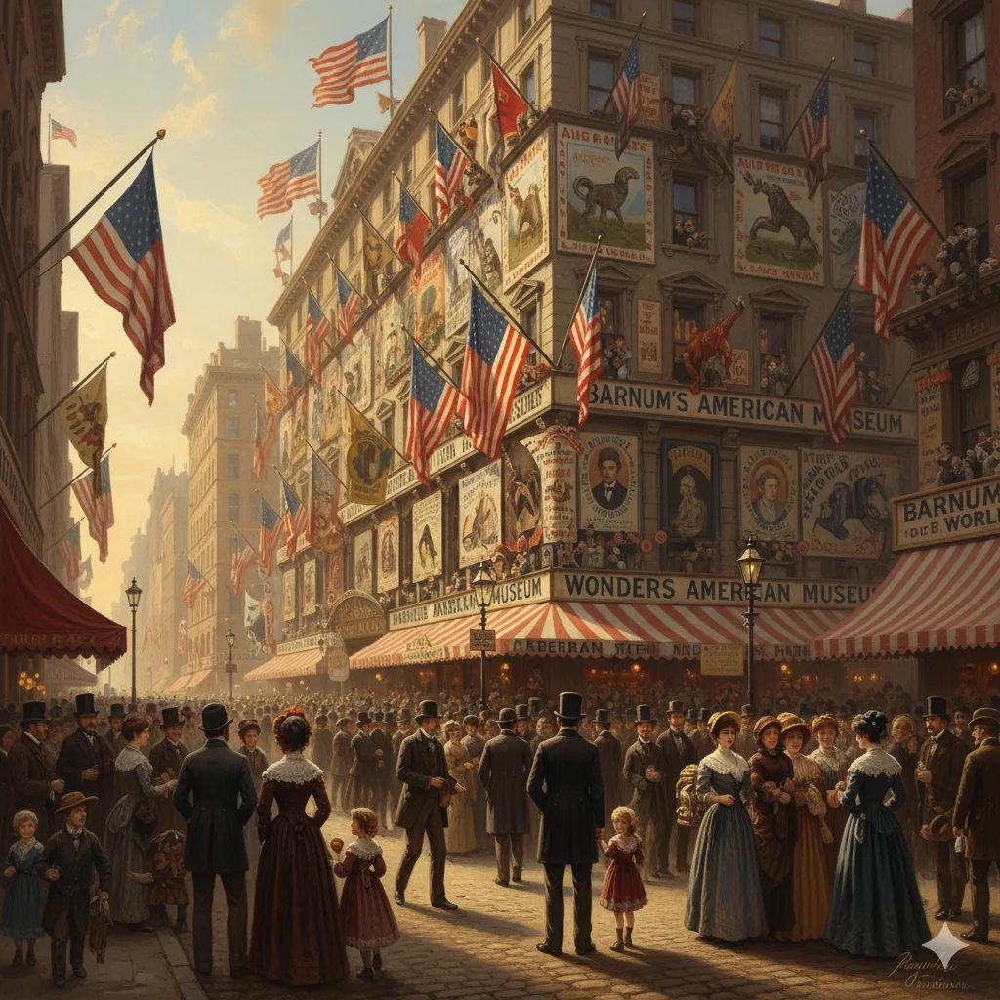
Overview
Established in 1841, Barnum's five-story museum drew an estimated 38 million admissions during its 24-year run
What Was Inside?
- Natural curiosities: Stuffed animals, geological specimens, natural oddities
- Living "human wonders": People with unusual physical characteristics
- Theatrical performances: Plays, musical acts, variety shows
- Scientific lectures: Educational talks (allegedly)
- Elaborate hoaxes: Fake mermaids, questionable artifacts
Hybrid Institution
A unique combination of:
- Moral lecture hall
- Curiosity cabinet
- Theater
- "Freak show"
Cross-Class Appeal
- Broadway location: Respectable enough for middle-class families
- Low admission (~$0.25): Affordable for working-class visitors
- Cross-gender appeal: Women and children explicitly welcomed
- Marketed as educational and moral
Humbug as an Art Form
Famous Hoaxes
Elderly Black woman Barnum claimed was 161 years old and George Washington's former nurse. Obviously false, but thousands paid to see her.
Taxidermy creation combining a monkey torso with a fish tail. Barnum presented it as authentic with fake scientific credentials.
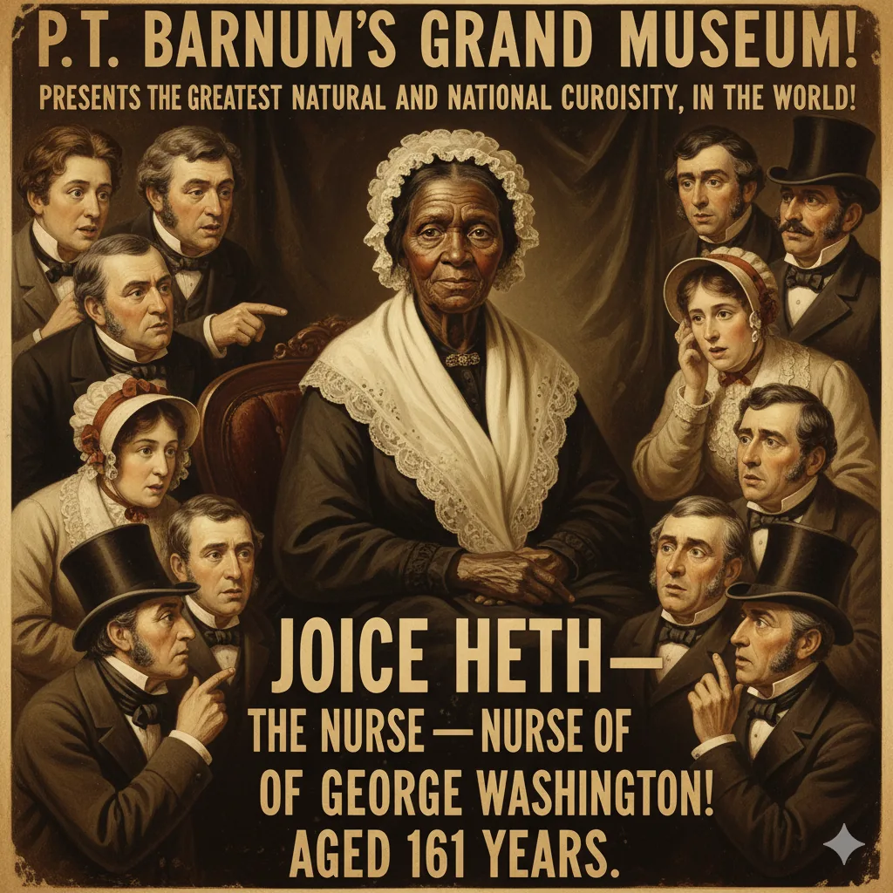
Click to enlarge
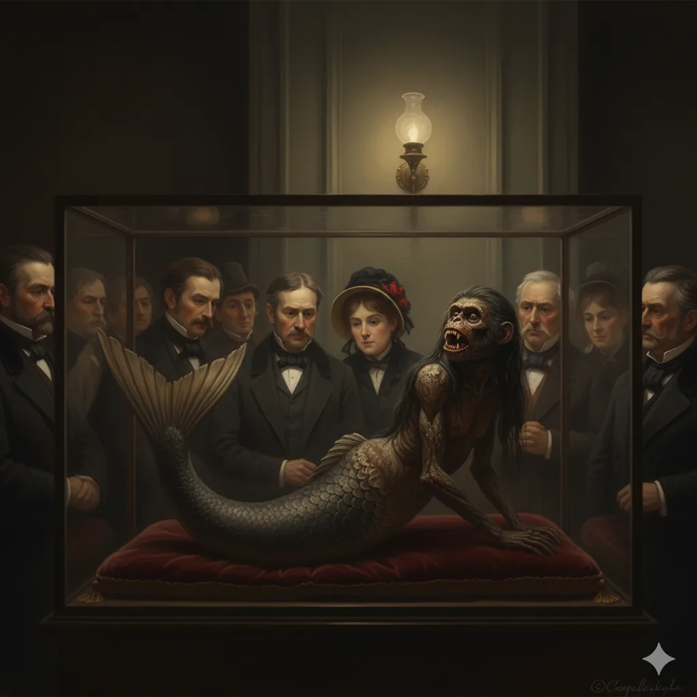
Click to enlarge
What Is Humbug?
Humbug: A blend of education, fraud, and emotional manipulation
- Not simple deception—audiences know they might be fooled
- The desire to be deceived is part of the pleasure
- Spectacle of belief and doubt performed publicly
- Value measured by experience rather than authenticity
The question isn't "Is it real?" but "Is it worth my quarter?"
Barnum's Rhetoric and Politics
Democratic Achievements
- Low prices: Makes culture accessible across class lines
- Broad access: Welcomes women, children, working class
- Participatory culture: Audiences actively debate and judge
- Meritocracy of pleasure: Your enjoyment is what matters, not your refinement
Problematic Aspects
- Exploitation: Displays people with disabilities as "freaks"
- Racial mockery: Perpetuates racist stereotypes (Joice Heth)
- Deception for profit: Capitalizes on gullibility
- Commercialization: Everything becomes commodity
Barnum represents both the promise and the problems of democratic commercial culture
He democratizes access but also exploits vulnerability. He empowers audiences but also manipulates them. He challenges elite culture but creates new hierarchies of his own.
Physical Mastery as Democratic Metaphor
Rather than by birth or wealth, a man's worth is demonstrated through physical courage and skill
The body becomes the site of value and citizenship—physical prowess equals democratic legitimacy
Rejection of "refinement" and self-restraint as elite values—toughness, not polish, defines the man
Democratic Ideology of the Prize Ring
In the ring, all men are equal—only strength, skill, and courage matter. Birth and wealth count for nothing. The working-class body becomes a democratic symbol.
The prize ring offers an alternative vision of American democracy—one based on physical prowess rather than property or education
Democratizing Curiosity and Emotion
Barnum's Democratic Genius
Everyone can participate in the game of belief and doubt—you don't need education or refinement
Audiences perform sophistication by debating authenticity with each other
Commercialization of wonder and feeling forms a public around shared experience
Creating "The Public"
Shared spectacular experiences produce "the public"
Strangers become a community through common experience of spectacle, debate, and collective judgment
Persistent Tension
Democratization vs. Exploitation
Does Barnum empower audiences or manipulate them? Does he democratize culture or commercialize human dignity?